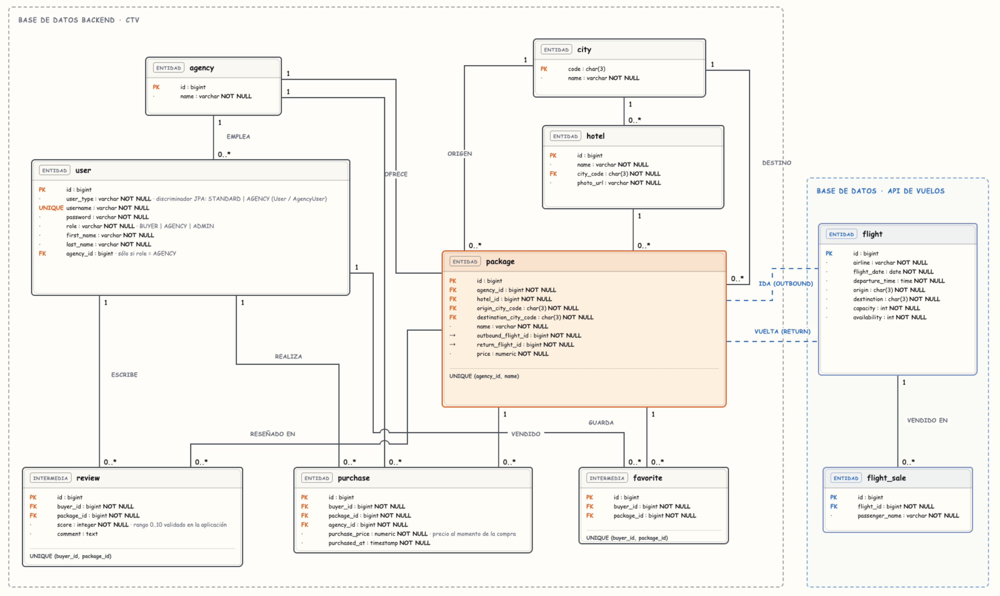

Qué hicimos
El producto, para quién es y qué entra en esta entrega.
El sistema, en un minuto
Compra Tu Viaje es una aplicación para buscar y comprar paquetes turísticos. Un paquete combina un hotel, un vuelo de ida y un vuelo de vuelta, con un precio, y lo publica una agencia.
El comprador busca, guarda favoritos, compra y reseña. La agencia publica sus paquetes y ve sus ventas. El administrador carga hoteles, vuelos, agencias, usuarios y paquetes de cualquier agencia.
Los vuelos no están en la base de la aplicación. Los administra flights-service, con su propia base. El backend lo consulta por HTTP para listar vuelos y para vender o cancelar asientos. El frontend es una SPA en React que habla solo con el backend.
La primera entrega dejó la base: autenticación, hoteles, ciudades, el servicio de vuelos y un primer despliegue. En esta, el producto se recorre de punta a punta y se puede explicar cómo se construye, se prueba y se entrega.
- Backend
- 412anotaciones de test: 159 unitarias, 249 de integración, 4 de arranque
- flights-service
- 5931 unitarias, 26 de integración, 2 de arranque
- Frontend
- 181casos de Vitest en
frontend/src - Aceptación e interfaz
- 13 y 13escenarios Cucumber y tests Cypress
De dónde salen los números. El 22/10/2026 contamos las anotaciones @Test y @ParameterizedTest al inicio de línea en los dos servicios Kotlin, y los it( y test( al inicio de línea en el frontend. Cucumber: 13 escenarios en critical-flows.feature. Cypress declara 12 casos; el de permisos de administración corre para comprador y para agencia, así que la suite ejecuta 13. No es el resultado de una corrida verde: es el tamaño de la suite en el código.
El problema y los tres roles
Hacía falta una aplicación web en la que una agencia publique un viaje cerrado y un comprador lo encuentre y lo pague, sin que los vuelos formen parte del mismo sistema. Separar vuelos obliga a resolver dos bases, llamadas que pueden fallar y una compra que no puede quedar a medias.
Comprador
Se registra, filtra el catálogo, abre el detalle, marca favoritos, compra, consulta el historial y reseña lo que compró. El registro público siempre crea este rol.
Agencia
Publica, edita y borra sus propios paquetes. Elige los vuelos de una lista. Ve las ventas de su agencia y las filtra por comprador, paquete y fechas.
Administrador
Gestiona hoteles, vuelos, agencias, usuarios y vendedores, paquetes de cualquier agencia y el historial de ventas de todas. No compra.
El enunciado de la cátedra no está copiado en el repositorio. Esta sección sale del modelo, de las rutas y de lo que la aplicación deja hacer. Si el texto oficial dice otra cosa en un detalle, manda ese texto.
Arquitectura
Qué usamos, cómo se conectan las piezas y cómo quedó el modelo.
Tecnologías y por qué
| Capa | Qué usamos | Para qué |
|---|---|---|
| Backend y vuelos | Kotlin 2.3, Spring Boot 4.1, Java 25, Gradle 9.5 | Dos APIs REST, cada una con su base |
| Seguridad | Spring Security, JWT (jjwt), BCrypt | Login sin sesión en el servidor. El rol viaja en el token |
| Datos | PostgreSQL 16 y Flyway en el backend. H2 en la mayoría de los tests | El esquema del backend está versionado. Producción valida, no altera tablas |
| Resiliencia | Resilience4j: Retry, TimeLimiter y CircuitBreaker | El backend no se cuelga si vuelos tarda o no responde |
| Contrato | springdoc OpenAPI | Swagger del backend, en /swagger-ui/index.html |
| Observabilidad | Actuator, Prometheus, Grafana, Zipkin, ELK | Salud, métricas, trazas de una compra y logs por servicio |
| Frontend | React 19, TypeScript 6, Vite 8, React Router 7 | SPA. Las páginas pesadas se cargan con lazy |
| Datos en el cliente | TanStack Query, axios, react-hook-form, zod | Caché de la API, token en cada pedido y formularios validados antes de salir |
| Pruebas | JUnit 5, Mockito, ArchUnit, Vitest, Cucumber, Cypress | De una clase a un recorrido en el navegador |
| Entrega | Docker, Compose, GitHub Actions, GHCR, Docker Hub, una VM en Azure | La imagen que se despliega es la que pasó los controles |
Cómo está armado el sistema
Backend, por capas
controller: endpoints, DTOs yExceptionControllerAdvice. Traduce excepciones a 400, 401, 403, 404, 503 y 500.service: reglas y transacciones.persistence/jpa: repositorios Spring Data.model: entidades conBuilder.external/flights:FlightsClient, con retry, timeout y circuit breaker.search: filtros, paginación, orden y la métrica de cada búsqueda.config: seguridad, CORS, OpenAPI y el seed.
ArchUnit falla el build si una clase no está en el paquete que le corresponde. Swagger sale de OpenApiConfig.kt.
Frontend, por responsabilidad
api/: un módulo por recurso, sobre un cliente axios. Manda el token y, ante un 401, limpia la sesión.auth/: sesión en localStorage, rehidratada conGET /users/me, y guardas por rol.query/: TanStack Query. Las claves de caché están enquery/keys.ts.pages/: una carpeta por pantalla.router/: rutas públicas, de comprador, de agencia y el árbol/admin.- Formularios con react-hook-form y un esquema zod por pantalla.
El backend decide quién puede llamar a cada ruta. El frontend esconde lo que el rol no usa. Si alguien llama a la API igual, recibe 403. Las dos capas no se reemplazan.
Modelo de datos

docs/mer.puml. A la derecha, la base de vuelos. El paquete la referencia solo por id de ida y de vuelta. La fuente actualizada es el .puml: si la imagen se ve más vieja, manda el archivo.Decisiones del modelo
- Un usuario, un discriminador.
userdistingueUser(comprador o administrador) deAgencyUser(pertenece a una agencia). - Ciudad con código IATA. La clave de
cityes el código de tres letras. El paquete tiene origen y destino. - Únicos que cuidan reglas. Un nombre de paquete por agencia. Un favorito y una reseña por comprador y paquete.
- Vuelos por id lógico. No hay clave foránea hacia la otra base. Al crear el paquete, el regreso tiene que salir de donde llegó la ida y llegar adonde salió.
La compra no sigue al catálogo
purchases guarda el precio pagado y una copia del comprador, el paquete, la agencia, el hotel, las ciudades y los ids de vuelo. La migración V2 agrega esas columnas y completa las compras que ya existían.
Si la agencia cambia el precio o el nombre después, el historial queda como estaba al pagar. Hay un escenario de Cucumber que cambia el precio y comprueba que la compra no se mueve.
Decisiones que tomamos
Cada una tiene un costo. Si alguien pregunta "por qué no lo hicimos de otra forma", la respuesta está en esta tabla.
| Decisión | Qué nos permitió | Qué nos costó |
|---|---|---|
| Vuelos es un servicio externo, con su base | El backend no conoce el esquema de vuelos. Se hablan por HTTP y el paquete guarda solo el id. | La compra no puede ser una sola transacción. Hay que compensar y tolerar que el otro servicio no responda. |
| Compensación, no commit en las dos bases | El deshace está en PurchaseService.purchase y se puede leer de una vez. | Si la cancelación también falla, puede quedar un asiento vendido sin compra. |
| Snapshot en la compra | El historial no se mueve si la agencia cambia el precio o el nombre. | Más columnas en purchases (migración V2) y dos fuentes de verdad: el paquete vivo y la copia. |
| La búsqueda se resuelve en el backend | Filtros, página y orden son los mismos para cualquier cliente. La URL del frontend solo refleja la consulta. | Cada filtro nuevo es una condición en la Specification, no un filtro en el navegador. |
| JWT sin sesión y CSRF apagado | El servidor no guarda sesiones. El token va en un header que el navegador no manda solo. | El secreto tiene que vivir en JWT_SECRET. El valor del properties es solo para desarrollo. |
| El rol lo decide el backend | Esconder un botón no es seguridad. SecurityConfig responde 403. | Hay que mantener las dos capas: la guarda de la interfaz y la regla de la API. |
| Flyway solo en el backend | Producción valida el esquema y no lo reescribe. | Vuelos, en prod, usa create-drop. Un reinicio pierde los vuelos cargados. |
create de vuelos no tiene retry | Reintentar un POST después de un corte ambiguo podría crear el vuelo dos veces. | Un alta que falla por red no se reintenta sola. Hay que volver a mandarla. |
Publicar solo en push a main | Un pull request nunca deja una imagen nueva. | Hasta que dev no entra a main, latest no incluye ese cambio. |
| Dos builds del frontend | La imagen de GHCR apunta a la VM (VITE_API_BASE_URL con VM_HOST). La de Docker Hub no pasa esa variable y cae en localhost:8080, que es lo que usa docker-compose.hub.yml. | No son el mismo bundle. Cambiar la URL de la API obliga a reconstruir. |
Cómo se usa
Qué puede hacer cada rol, en la pantalla y en la API.
Comprador y agencia
Es el recorrido principal. La agencia comparte el catálogo con el comprador y tiene su propio panel.
| Quién | Qué hace | API | Pantalla |
|---|---|---|---|
| público | Registrarse (siempre comprador) y entrar | POST /auth/register, POST /auth/login | /register, /login |
| logueado | Buscar paquetes, ver detalle, hoteles, ciudades y perfil | GET /packages, /packages/{id}, /hotels, /users/me | /trips, /trips/:id, /profile |
| comprador | Comprar | POST /purchases | Detalle del paquete |
| comprador | Historial filtrado y detalle de una compra | GET /purchases/me, GET /purchases/{id} | /purchases, /purchases/:id |
| comprador | Favoritos | POST /favorites, DELETE /favorites/{packageId} | /favorites |
| comprador | Reseñar lo comprado, una vez, puntaje de 0 a 10 | POST /reviews | Detalle del paquete |
| agencia | Crear, editar y borrar sus paquetes | POST/PUT/DELETE /packages, GET /packages/agency | /agency |
| agencia | Ventas de su agencia | GET /purchases/agency | /agency/sales |
Buscador
- Filtros: nombre (contiene, sin distinguir mayúsculas), origen, destino y rango de precio.
- El backend arma una
Specificationde JPA: cada filtro presente suma una condición. Paginación y orden se resuelven en la base. - Cada búsqueda registra duración y cantidad de resultados. Esa métrica llega a Prometheus.
- En el frontend los filtros viven en la URL: se pueden compartir y sobreviven a recargar.
Reglas que conviene tener a mano
- Solo un comprador compra. Agencia o administrador reciben 403.
- Solo se reseña lo comprado, una vez por paquete. Si no, 400.
- Un paquete no se borra si tiene compras, favoritos o reseñas. La API responde 400 con el motivo.
- El nombre del paquete es único dentro de la agencia.
- El historial muestra la copia congelada al comprar, no el paquete vivo.
Usuarios del seed: buyer y buyer2 con contraseña buyer123. Agencia Despegar: agency / agency123.
Administrador
Entra a /admin. La navegación de esa sección solo aparece para el rol administrador. Hoteles se gestionan en /hotels, también restringido al alta, la edición y la baja.
| Área | Pantalla | API |
|---|---|---|
| Inicio del panel | /admin | Tarjetas hacia el resto. No tiene un endpoint propio |
| Usuarios y vendedores | /admin/users | GET/POST /admin/users, PUT /admin/users/{id} |
| Agencias | /admin/agencies | GET/POST /agencies, PUT /agencies/{id} |
| Ventas de todas las agencias | /admin/sales, /admin/sales/:id | GET /admin/sales. El detalle usa GET /purchases/{id} |
| Paquetes de cualquier agencia | /admin/packages | POST/PUT/DELETE /packages (agencia o admin) |
| Vuelos | /admin/flights | POST /flights exige ADMIN y delega en flights-service |
| Hoteles | /hotels, /hotels/new, /hotels/:id/edit | POST/PUT/DELETE /hotels exigen ADMIN. El listado es para cualquier logueado |
Qué se hace en cada pantalla
- Usuarios. Alta de cuentas, rol, agencia del vendedor, y habilitar o deshabilitar.
- Agencias. Alta y edición del nombre, para colgar vendedores y paquetes.
- Paquetes. Listado de todas las agencias, formulario con selector de agencia y de vuelos (
FlightPickerconsultaGET /flights). - Vuelos. Alta con aerolínea, origen, destino, fecha, capacidad y disponibilidad. El backend rechaza origen igual a destino, capacidad no positiva y disponibilidad negativa.
- Ventas. Historial de todas las agencias, con filtros, y el detalle de una compra.
- Hoteles. Nombre, ciudad (desde
GET /cities) y URL de la foto. Borrar pide confirmación.
Cómo se protege
SecurityConfig:/admin/**, alta y edición de agencias, escritura de hoteles yPOST /flightsconhasRole("ADMIN"). Escribir paquetes pide agencia o administrador.- Los controllers de
/admin/usersy/admin/salesademás llevan@PreAuthorize("hasRole('ADMIN')"). - En el frontend,
adminRouteenvuelve/adminy sus hijas conRequireAdmin. Un comprador o una agencia que abre esas rutas ve "Sin permiso".
Para la demo: vferreyra / vferreyra. También son administradores facosta y adisanto, con la contraseña igual al usuario. El detalle de pantallas está en docs/admin.md.
Comprar sin dejar la compra a medias
Una compra descuenta un asiento en la ida y otro en la vuelta. Esos vuelos viven en otro servicio y otra base. No hay una transacción que cubra los dos sistemas. Si algo falla después de haber vendido un asiento, el backend lo devuelve.
PurchaseService.purchase.Si flights-service no responde
- Retry: hasta 3 intentos, con 500 ms entre ellos, solo ante error de conexión.
createno lo tiene. - Circuit breaker: mira las últimas 10 llamadas. Si falla la mitad o más, se abre 10 segundos. El detalle, con lo que hoy no está cableado, está en Circuit breaker.
- Vuelo inexistente o sin lugar no cuentan como falla y no se reintentan.
- El usuario recibe 503. El estado del circuito está en
/actuator/health.
Qué queda cubierto por tests
- Cucumber: si la vuelta no tiene lugar, no queda compra y la ida recupera su disponibilidad.
- Cucumber: una compra baja en uno los dos vuelos y conserva el precio de ese momento.
FlightsClientTestcubre 404, 4xx, 5xx y caída de red.PurchaseServiceTestcomprueba las dos ventas y el precio congelado.
Son dos servicios y dos bases. Acoplarlos con un commit en las dos habría atado el backend al esquema de vuelos. La compensación es local y se puede leer en un solo método. Tiene límites, y están en Límites.
Qué es el servicio de vuelos
Para el backend, vuelos es un sistema de afuera. No es un módulo interno con la base compartida.
flights-service es otra aplicación Spring Boot, con su PostgreSQL (flights_dev) y su puerto 8081. El compose principal no publica ese puerto al host: solo lo ve el backend, por la red flights-net. La base de vuelos está en esa red y no en backend-net, así que el backend no puede abrirla aunque quiera.
El paquete guarda outbound_flight_id y return_flight_id. No hay clave foránea entre bases. Si el vuelo no existe, el backend se entera cuando llama. Que el regreso salga de donde llegó la ida lo valida el backend al crear el paquete, no la base.
| El backend llama | Para qué | Protección |
|---|---|---|
GET /flights/{id} | Traer un vuelo al armar o mostrar un paquete | Retry y circuit breaker |
GET /flights | El selector de la agencia y del administrador | Retry y circuit breaker |
POST /flights/{id}/sales | Vender un asiento en la compra | Retry y circuit breaker |
DELETE /flights/sales/{id} | Devolver el asiento si la compra no se puede cerrar | Retry y circuit breaker |
POST /flights | El administrador carga un vuelo | Solo circuit breaker. Sin retry, para no duplicar el alta |
Todo eso pasa por FlightsClient. La URL sale de FLIGHTS_SERVICE_URL (en local, http://localhost:8081). Un 404 se traduce a "no existe". Un 4xx de negocio, como no haber lugar, es un error de la operación. Un 5xx o un corte de red es una caída del servicio.
Circuit breaker entre backend y vuelos
Es el corte que evita que el backend se quede esperando a un servicio que ya está mal. Está en las anotaciones de FlightsClient y en application.properties, instancia flightsService.
| Estado | Qué hace el backend |
|---|---|
| Cerrado | La llamada sale. Se anotan las últimas 10. Si la mitad o más fallan, pasa a abierto. |
| Abierto | Durante 10 segundos no llama a vuelos. Responde enseguida. El usuario ve 503. |
| Semiabierto | Deja pasar 3 llamadas de prueba. Si salen bien, cierra. Si fallan, vuelve a abrir 10 segundos. |
Qué cuenta como falla
- No hay conexión (
ResourceAccessException). El cliente la convierte enFlightsServiceUnavailableExceptiony el retry la vuelve a intentar, hasta 3 veces, con 500 ms de espera. - Un 5xx también se convierte en servicio no disponible y suma para abrir el circuito. No está en la lista de retry, así que no se reintenta.
- Un 404 y un 4xx de negocio se ignoran. No abren el circuito y no se reintentan: son "ese vuelo no existe" o "no hay lugar", no "el servicio se cayó".
Dónde se ve
register-health-indicator=trueymanagement.health.circuitbreakers.enabled=true. El estado aparece en/actuator/health.- Para verlo:
docker compose stop flights-service, intentar comprar varias veces y mirar el health. Después,docker compose start flights-service.
resilience4j.timelimiter.instances.flightsService.timeout-duration=3s está en el properties. Ningún método tiene @TimeLimiter, y RestClient.builder() no fija connect ni read timeout. Hoy una llamada colgada puede tardar lo que tarde el cliente HTTP. El corte de 3 segundos no está activo.
Para activarlo hay que anotar los métodos o poner el timeout en el RestClient. Conviene hacerlo junto con una decisión sobre create: un timeout a mitad de un POST es justo el caso en el que reintentar duplicaría el vuelo. Por eso el alta no tiene retry.
Cómo lo desarrollamos
Contenedores, ramas, integración continua y el camino hasta una VM.
Docker y Compose
Imágenes en dos etapas
- Backend y vuelos. Una etapa compila el jar con
eclipse-temurin:25-jdk. Otra lo corre en25-jre. La imagen final instalacurlpara el healthcheck. - Frontend.
node:24-alpinecorre Vite.nginx:alpinesirvedist. La URL del backend entra comoVITE_API_BASE_URLen el build, porque el bundle es estático. - Primero se copian los archivos de dependencias y después el código, para aprovechar la caché de capas.
Un compose, varias redes
docker compose up --buildlevanta frontend, backend, vuelos, dos PostgreSQL, Prometheus, Grafana, Zipkin y ELK.- El backend espera a que su base y vuelos estén
healthy. Vuelos espera a su base. - La base del backend está solo en
backend-net. La de vuelos, solo enflights-net. El backend llega a la API de vuelos, no a su Postgres. - Host, credenciales, URL de vuelos,
JWT_SECRETy CORS salen de variables de entorno.
| Archivo | Para qué |
|---|---|
docker-compose.yml | Desarrollo. Compila en local y usa el profile dev. |
docker-compose.prod.yml | Se superpone al anterior. Toma imágenes de GHCR y el profile prod. Lo usa la VM. |
docker-compose.hub.yml | Levanta el stack desde Docker Hub, sin compilar. |
docker-compose.e2e.yml | Cypress, proyecto Docker ctv-e2e, puertos 18080, 18081 y 18090. |
acceptance-tests/docker-compose.yml | Cucumber, con bases temporales que se borran al apagar. |
En dev el backend vuelve a cargar el seed en cada arranque. En prod solo agrega lo que falta y Flyway valida el esquema (ddl-auto=validate). Flyway corre antes que JPA. flights-service no usa Flyway: en dev el esquema es update y en prod el default es create-drop.
Cómo entra un cambio
Una rama feature/* por cambio, pull request hacia dev, y de dev a main cuando esa versión es la que se publica. Los mensajes siguen Conventional Commits: feat, fix, test, ci, docs.
No se empuja directo a main. La primera revisión de un pull request es la integración continua: tests, estilo y, en backend y vuelos, el Quality Gate. Una aprobación humana obligatoria depende de la protección de ramas en GitHub; el workflow solo no la impone.
Integración continua
Cada pull request o push a dev y main dispara seis workflows. Backend, vuelos y frontend tienen filtro por carpeta: un cambio solo de frontend/ no corre Gradle. Aceptación, e2e y la validación de workflows corren igual.
Decisiones
- Workflows reutilizables. El deploy llama a backend, vuelos y frontend con
checks-only: true. No hay una lista paralela de controles. - ktlint dentro de
check. Si el formato está mal, el build falla. La CI no lo corrige sola. - Entornos aislados. Cucumber y Cypress usan otro proyecto de Compose, esperan salud y apagan los contenedores aunque el job falle.
- Si un e2e falla, el job muestra las últimas líneas de log de la aplicación.
La CI se revisa a sí misma
actionlint mira sintaxis y expresiones. scripts/check-ci.rb revisa reglas nuestras: publicar exige que el build haya pasado, Sonar no se saltea salvo en forks, stop de la VM no depende de los tests, y el cleanup de Docker existe siempre.
En local: ruby scripts/check-ci.rb desde la raíz. No reemplaza una corrida en Actions.
Qué hace cada workflow
Hay seis archivos en .github/workflows. Los tres de módulo se pueden llamar desde el deploy. Aceptación y la validación de workflows también. El de Azure solo se dispara a mano.
| Workflow | Cuándo corre | Qué ejecuta | Qué no hace |
|---|---|---|---|
| Backend CI | PR o push a dev o main si cambia backend/** o el propio workflow | ./gradlew build. Incluye ktlint, porque check depende de ktlintCheck, y los tests. Después Sonar con Quality Gate, salvo en un PR de un fork. | No corre si el PR solo toca frontend, vuelos o docker-compose.yml. No publica en un PR. |
| Flights Service CI | Igual, con filtro flights-service/** | El mismo esquema: build, ktlint, tests y Quality Gate. | No mira el backend. Un cambio de contrato hay que probarlo en los dos lados. |
| Frontend CI | Filtro frontend/** | Node 24, npm ci, lint, tests y build. El build incluye el chequeo de tipos. | No hay Sonar ni un piso de cobertura. |
| Acceptance and E2E CI | Todo PR y push a dev o main, sin filtro de carpeta. También lo llama el deploy. | Dos jobs en paralelo, tope 20 minutos. Cucumber levanta el proyecto ctv-acceptance-ci y corre el perfil ci. Cypress levanta docker-compose.e2e.yml y corre en Electron. Si fallan, muestran las últimas 200 líneas de log. Siempre hacen down. | No publica imágenes. Corre aunque el cambio sea solo de documentación. |
| Workflow Validation CI | Todo PR y push, y también el deploy | actionlint sobre los YAML y ruby scripts/check-ci.rb. Tope 10 minutos. | No compila la aplicación. Revisa reglas nuestras: publicar solo si el build pasó, Sonar no se saltea salvo en forks, stop no depende de los tests, y el cleanup existe. |
| Deploy Demo (Azure VM) | Manual. Actions, acción deploy o stop | deploy llama a los cinco anteriores. Backend, vuelos y frontend van con checks-only: true, así no publican ellos. Si todo pasa, un job propio sube las tres imágenes a GHCR con el SHA, prende la VM, hace pull y levanta sin compilar. stop solo apaga la VM. | No publica en Docker Hub. No se dispara solo. El grupo azure-demo no cancela un deploy que ya empezó. |
Cuándo sí se publica una imagen
En el push a main, el job publish de cada módulo corre solo si build pasó y checks-only no es true. Backend y vuelos suben la misma imagen a GHCR y a Docker Hub, con latest y el SHA.
El frontend hace dos builds. GHCR lleva VITE_API_BASE_URL apuntando a la VM. Docker Hub no pasa esa variable y el bundle cae en localhost:8080, que es lo que usa docker-compose.hub.yml. No son el mismo archivo estático.
Si faltan DOCKERHUB_USERNAME o DOCKERHUB_TOKEN, ese job de main falla. Un PR no llega a publicar.
Por qué el deploy repite los checks
El workflow de Azure no tiene una lista propia de tests. Llama a los mismos YAML. Lo que se despliega es lo que esos workflows acaban de aceptar, identificado por el SHA. Si uno falla, no hay imagen nueva ni SSH a la VM.
Sonar y Quality Gate
Qué analiza
- Dos proyectos en SonarCloud: backend y flights-service. El frontend no entra.
- La cobertura es el XML de JaCoCo, generado después de los tests. El paso
sonardepende detesty dejacocoTestReport. - Quedan fuera de la cobertura las clases
*Application*y el paqueteconfig.
Cómo se exige
./gradlew sonar \
-Dsonar.qualitygate.wait=true \
-Dsonar.qualitygate.timeout=300- El job espera el veredicto hasta 300 segundos. Si el gate no pasa, el job falla.
- Sin
SONAR_TOKENen una corrida interna, también falla. - Un pull request de un fork no recibe secretos: Sonar se omite, tests y lint siguen.
El Quality Gate corre en los pull requests que tocan backend/ o flights-service/. Que GitHub impida el merge si el check está rojo es configuración de protección de ramas, además del workflow. No fijamos un piso de cobertura del 80 %: el control es el gate. Los números vigentes están en los badges del README.
De un commit a una imagen y a una VM
Cuándo se publica
- Push a
main. Si el build del módulo pasó, se publicanlatesty el SHA en GHCR y en Docker Hub. Un pull request no publica. - Deploy manual. Actions,
Deploy Demo (Azure VM), accióndeploy. Corre los controles, publica las tres imágenes en GHCR con el SHA elegido, prende la VM, hacecompose pully levanta con--no-build. Cierra con el health del backend. No publica en Docker Hub. - La acción
stopapaga la VM y no espera tests.
Por qué la VM no compila
- Baja la imagen ya probada, identificada por el SHA. Si la descarga falla, no levanta la aplicación.
- Un grupo de concurrencia evita dos deploys a la vez.
- Docker Hub pide
DOCKERHUB_USERNAMEyDOCKERHUB_TOKEN. Si faltan, el job demainfalla con un mensaje claro. El namespace opcional esDOCKERHUB_NAMESPACE(por defectoacostaf12). - Azure usa solo GHCR, con el token del workflow.
La demo en la nube. La VM está en northcentralus y solo responde encendida. La IP pública documentada es 64.236.199.81 mientras no se borre el recurso. Frontend en el 8090, backend en el 8080, Grafana en el 3001, Zipkin en el 9411, Kibana en el 5601. Al terminar, correr stop.
Pruebas y lectura
Qué cubre cada nivel, cómo mostrarlo y qué límites conviene decir antes de que pregunten.
Unitarios, integración, aceptación e interfaz
Unitarios
- Modelos, DTOs y el cliente de vuelos con
MockRestServiceServer, sin levantar un servidor. - Criterios del buscador, paginación y métricas.
- ArchUnit: nombres y capas.
- Frontend: Vitest y Testing Library, con la API mockeada. Incluye el panel de administración y
FlightPicker.
Integración
@SpringBootTest, MockMvc y H2, con la seguridad activa.- El cliente de vuelos se reemplaza con un mock. El resto del contexto es real.
PurchaseHistoryMigrationTestcubre el Flyway V2.PostgresQueriesTestusa Testcontainers. Si no hay Docker, se omite.
Cucumber, 13 escenarios
Reglas de negocio por HTTP, con backend, vuelos y Postgres temporales. Sin navegador.
- Login, publicación por la agencia y 403 si publica un comprador.
- Búsqueda por origen y destino, y con todos los filtros.
- Compra, descuento de asientos, precio congelado y compensación si no hay lugar en la vuelta.
- Reseña sin compra y reseña duplicada, ambas rechazadas.
- Un administrador carga vuelos y publica un paquete que el comprador encuentra. Una agencia no puede cargar vuelos.
Cypress, 13 tests
La aplicación completa en Docker, en Electron cuando corre la CI. No guarda video ni capturas.
- Login, búsqueda y detalle. Contraseña incorrecta y reintento.
- Un comprador no entra al alta de hoteles ni a esa API. El administrador crea, edita y borra un hotel.
- Compra desde el detalle. El historial sobrevive a recargar.
- Administración: vuelos, paquetes, selector de la agencia, y el error al borrar un paquete que ya se compró.
- Usuarios: alta de agencia y vendedor, seguimiento de una venta, bloqueo de cuenta y cambio de permisos. Comprador y agencia no entran a
/admin/users,/admin/agenciesni/admin/sales.
Cómo correrlos
# backend o vuelos, con Java 25
cd backend && ./gradlew test jacocoTestReport
# frontend, con Node 24
cd frontend && npm ci && npm test && npm run lint
# Cucumber. Alcanza con Docker
cd acceptance-tests && docker compose run --rm --build acceptance-tests
# Cypress. Primero el entorno aislado
docker compose -f docker-compose.e2e.yml up --build -d --wait
cd frontend && npm run e2e:run -- --browser electronCómo mostrarlo
Unos 13 minutos, de la pantalla a GitHub. El guion corto para el equipo, con las mismas URLs, está en docs/demo.md. Conviene ensayarlo una vez con docker compose up --build -d --wait desde cero.
- Entorno1 min
docker compose pscon los servicios sanos. Pestañas: aplicación en el8090, Swagger, Grafana (admin/admin), Zipkin y Kibana. Para volver al seed:docker compose down -vy levantar de nuevo. - Comprador3 min
buyer/buyer123. En/trips, filtrar y ver que la URL cambia. Detalle, favorito y compra de un paquete que no diga que ya está comprado. En/purchases, el precio abonado y los filtros del historial. - Agencia2 min
agency/agency123. En/agency, crear un paquete eligiendo vuelos de la lista. Ventas en/agency/sales. Un comprador que abre/agencyve "Sin permiso". - Administrador3 min
vferreyra/vferreyra. Hotel en/hotels. En/admin: un vuelo, un paquete para Despegar, una agencia o un usuario, y las ventas. Después, el mismo comprador en/adminy el mensaje de permiso. - Resiliencia y observabilidad2 min
docker compose stop flights-service, intentar comprar y mostrar el 503 y el circuito en/actuator/health. Volver a levantar el servicio. Grafana, dashboard CTV - Overview. En Zipkin, una traza del serviciobackend. Kibana pide la data viewctv-logs-*la primera vez. - GitHub2 min
Una corrida de Actions en verde, el Quality Gate en el job de Sonar, y las imágenes en Packages. Si la VM está prendida, la misma build en
http://64.236.199.81:8090.
Si algo no levanta. Tener abiertos el README, este documento, el MER, una corrida verde de Actions y los dashboards de Sonar. La VM suele estar apagada: no depender de ella para el recorrido local.
Preguntas que suelen aparecer
Las respuestas salen del código. Donde hay un límite, la respuesta lo dice.
Arquitectura
¿Por qué dos servicios?
En el dominio, los vuelos son un sistema externo. Separarlos deja una base propia, fallas de red y una compra que cruza dos sistemas. Se hablan por HTTP. El paquete guarda el id del vuelo, no una clave foránea.
¿La compra es atómica?
No hay transacción distribuida. Es una compensación: si falla la vuelta, se cancela la ida; si falla el guardado, se cancelan las dos ventas. Si la cancelación también falla, el código la ignora y puede quedar un asiento reservado sin compra.
¿Qué pasa si flights-service está caído?
Hasta 3 reintentos con 500 ms, solo si no hay conexión. Si la mitad de las últimas 10 llamadas falla, el circuito se abre 10 segundos y el usuario recibe 503. Los errores de negocio no se reintentan ni abren el circuito. El timeout de 3 segundos está en el properties y no está anotado en el cliente: hoy no corta la llamada. El detalle está en Circuit breaker.
¿Por qué el historial guarda una copia?
Para que no cambie si la agencia edita el paquete. La compra guarda precio, nombres, hotel, ciudades e ids de vuelo. Lo agrega la migración V2. Cucumber cambia el precio y comprueba que el historial queda igual.
¿Por qué Flyway?
El esquema queda versionado y producción valida en lugar de modificar tablas (ddl-auto=validate). Flyway tiene que correr antes que JPA. Vuelos no lo usa.
¿Cómo busca paquetes?
El controller arma criterios (nombre, origen, destino, precio). Una Specification suma una condición por filtro. Se pagina y ordena en la base, y cada búsqueda mide duración y cantidad de resultados.
¿Cómo elige vuelos la agencia?
FlightPicker llama a GET /flights filtrando origen, destino y fecha. El backend, al crear el paquete, igual valida que el regreso continúe el tramo de ida.
Seguridad
¿Cómo es el login?
Usuario y contraseña. La contraseña se guarda con BCrypt. El backend devuelve un JWT que vence a las 24 horas. El frontend lo manda en Authorization: Bearer. Un filtro lo valida en cada pedido.
¿Por qué CSRF está desactivado?
La API no usa cookie de sesión. El token va en un encabezado que el navegador no agrega solo. CSRF protege sesiones por cookie.
¿Dónde se controla el rol?
En SecurityConfig, por método y ruta. Algunos servicios vuelven a mirar el rol y responden 403, por ejemplo al comprar. Las guardas del frontend son de interfaz.
¿Dónde está el secreto del JWT?
En la variable JWT_SECRET. El valor de application.properties es para desarrollo. En un entorno real hay que definirla.
¿Cómo se crea un administrador?
El registro público crea compradores. Administradores, agencias y el usuario de agencia salen de DataBootstrap. Desde /admin/users un administrador también puede crear cuentas.
Frontend, pruebas y entrega
¿Por qué TanStack Query?
Concentra carga, error, caché e invalidación. Al comprar o marcar un favorito se invalida la clave y la lista se actualiza. Las claves están en query/keys.ts.
¿Qué prueba cada nivel?
Unitarios: una pieza, rápido. Integración: Spring, seguridad y base, con vuelos mockeado. Cucumber: reglas por API con servicios reales. Cypress: lo que hace una persona en el navegador. Cada nivel ve fallas que el anterior no ve, y tarda más.
¿Dónde se publican las imágenes?
En push a main, en GHCR y en Docker Hub, con latest y el SHA. El deploy manual publica solo en GHCR, con el SHA elegido, y solo si los controles pasan. Nunca en un pull request.
¿Qué pasa si falla un test en el deploy?
Publicar depende de los controles. Si uno falla, no hay imagen nueva ni deploy. stop sigue disponible para apagar la VM.
Límites que conocemos
Son decisiones con costo. Conviene nombrarlas, y tener a mano la mejora.
| Límite | Consecuencia | Mejora |
|---|---|---|
| La venta de un asiento no usa bloqueo ni versión | Dos compras simultáneas del último asiento pueden sobrevender. | Bloqueo al leer el vuelo, o un UPDATE que solo descuente si availability > 0 y revise las filas afectadas. |
| La compensación no se reintenta | Si cancelar también falla, queda un asiento reservado sin compra. | Reintentar la cancelación, o guardar las pendientes para un proceso posterior. |
| Sonar solo en backend y vuelos | El frontend no tiene Quality Gate. | Un proyecto de Sonar con la cobertura de Vitest. |
| Vuelos no tiene Flyway | En prod el esquema default es create-drop. Un reinicio no conserva vuelos. | Migraciones, como en el backend. |
| El Quality Gate no es un branch protection por sí solo | El job se pone rojo, y GitHub igual puede permitir el merge si la rama no exige ese check. | Marcar los checks como obligatorios en dev y main. Antes, distinguir los jobs: los tres módulos llaman build al suyo y GitHub no los separa bien como checks obligatorios. |
| El timeout de 3 segundos no está cableado | La propiedad de Resilience4j existe. Sin @TimeLimiter ni timeout en el RestClient, una llamada colgada no se corta a los 3 segundos. | Anotarlo o configurarlo en el cliente, y decidir qué pasa con un POST de alta que se corta a mitad. |
Qué mejoraríamos nosotros
No es una lista para la defensa. Es lo que haríamos si seguimos el proyecto, en el orden en que duele.
Arquitectura y compra
- Activar el timeout de las llamadas a vuelos. Hoy está escrito y no corre.
- Vender el asiento con un
UPDATEque solo descuente si queda disponibilidad, para que dos compras del último asiento no pasen las dos. - Si cancelar la venta también falla, guardarla y reintentarla. Hoy ese error se traga.
- Pasar vuelos a Flyway, como el backend, para que un reinicio en
prodno borre lo cargado.
CI
- Ponerle a cada job un nombre distinto (
backend-build,flights-build,frontend-build) y exigirlos en la protección de ramas, junto con el Quality Gate. - Un cambio de
docker-compose.ymlno dispara Backend CI ni Flights CI. Sí dispara e2e, que es lo más caro. El compose debería entrar en los filtros de los módulos que afecta, y un PR solo de docs no debería levantar Cypress. - Sumar Sonar al frontend, o al menos publicar la cobertura de Vitest. Hoy el gate no mira esa carpeta.
- Tope de tiempo en los jobs de Gradle. Cucumber y Cypress ya tienen 20 minutos. Backend y frontend, no.
Mapa del repositorio
Dónde abrir el código cuando piden ver una prueba.
.
├─ backend/ API. Puerto 8080
│ └─ src/main/kotlin/unq/pdes/backend/
│ ├─ controller/ endpoints, DTOs, manejo de errores
│ ├─ service/ reglas y transacciones
│ ├─ persistence/jpa/ repositorios
│ ├─ model/ entidades y snapshots de la compra
│ ├─ external/flights/ cliente con retry, timeout y circuit breaker
│ ├─ search/ filtros del catálogo y del historial
│ └─ config/ seguridad, CORS, OpenAPI, seed
├─ flights-service/ vuelos y su base. Puerto 8081
├─ frontend/ SPA. En Docker, nginx en el 8090
│ ├─ src/ api, auth, query, pages, router
│ └─ cypress/e2e/ tests de interfaz
├─ acceptance-tests/ Cucumber
├─ monitoring/ Prometheus, Grafana y Logstash
├─ scripts/check-ci.rb reglas de los workflows
├─ .github/workflows/ seis workflows, incluido el deploy
└─ docs/ esta guía, demo, admin y el MER| Si preguntan por | Abrir |
|---|---|
| Quién puede llamar a cada ruta | backend/…/config/SecurityConfig.kt |
| La compra y la compensación | PurchaseService.purchase |
| Retry, timeout y circuit breaker | FlightsClient.kt y application.properties |
| El buscador | TravelPackageSearchSpecification.kt |
| Columnas de snapshot | V2__purchase_history_snapshots_and_indexes.sql |
| La guarda de administración | frontend/src/router/adminRoutes.tsx |
| Escenarios de aceptación | acceptance-tests/features/critical-flows.feature |
| Tests de interfaz | frontend/cypress/e2e/ |
| Qué valida la CI sobre sí misma | scripts/check-ci.rb |
Glosario
| Término | Qué significa acá |
|---|---|
| Compensación | Si un paso de la compra falla, se deshacen a mano los asientos ya vendidos. No hay una transacción común a las dos bases. |
| Snapshot | Copia de precio, nombres, hotel y ciudades guardada al comprar. El historial no sigue los cambios posteriores del paquete. |
| Retry | Reintentar la llamada a vuelos si falló la conexión. Hasta 3 veces, con 500 ms de espera. |
| Timeout | La propiedad dice 3 segundos. Sin @TimeLimiter ni timeout en el RestClient, esa llamada no se corta. |
| Circuit breaker | Si vuelos falla seguido, el backend deja de llamarlo un rato y responde 503 enseguida. |
| Specification | Consulta de JPA armada sumando una condición por cada filtro presente. |
| IATA | Código de tres letras. Es la clave de city. |
| JWT | Token firmado que entrega el login. El servidor no guarda la sesión. |
| Flyway | Esquema versionado con SQL numerado (V1, V2). Lo usa el backend. |
| Quality Gate | Veredicto de Sonar. El job espera y falla si no pasa. |
| GHCR | Registro de imágenes de GitHub. De ahí toma las imágenes la VM. |
| SPA | El navegador descarga el frontend una vez y después solo pide datos a la API. |